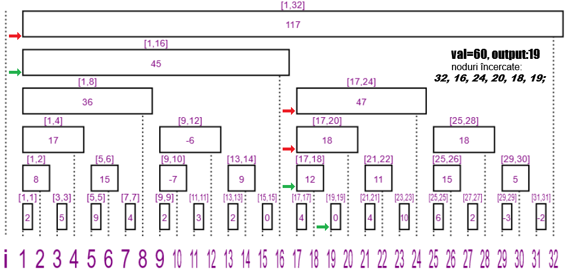

Reprezentarea prin segmente
Nodurile arborelui vor avea 2 valori: indexul unic și valoarea propriu-zisă. Când spunem nodul a ne referim la nodul care are indexul egal cu a. Spre deosebire de reprezentarea clasica, reprezentarea prin segmente este mai compacta, motiv pentru care am păstrat mai multe informații. Principiul este următorul: pe primul nivel se află nodurile care au lungimea intervalului (dr-st+1) egală cu 1, pe al doilea nivel se află nodurile cu lungimea intervalului egala cu 2, ..., pe al k-lea nivel se află nodurile cu lungimea intervalului egala cu 2k-1. Definim astfel arborele de interogare pe prefix:
Nodul y este "fratele stang" nodului x ⇔ y=x-(x&-x).
Cu toate că nu există conceptul de frați "stângi" sau "drepți" atunci când discutăm despre arbori, ne putem gândi la muchiile arborelui în acest mod pentru a păstra aceeași figură la ambii arbori (de sufix și de prefix). Când avem o operație pe prefix vom parcurge "frații stangi", iar când avem o operație pe sufix vom parcurge părinții.
 |
 |
După cum puteți vedea, vom împrumuta arborele de interogare pe prefix și pentru căutarea binară, dar îl vom parcurge în sens opus. Începând de la cel mai mare, vom căuta primul nod cu capătul stâng al intervalului în 1 astfel încât valoarea acestuia să fie mai mică decât valoarea pe care o căutam. Vom alege nodul ind și vom incrementa suma curentă cu AIB[ind], după care căutam din nou primul nod cu capătul stâng în ind+1 ("frați drepti" pentru ind) astfel încât prin adăugarea valorii sale în sumă nu atingem valoarea dată. Acest proces îl vom repeta pentru fiecare nod găsit, până nu mai avem "frați drepți" care îndeplinesc condiția.
Prin această parcurgere avem acces în O(1) la sumele din frații nodurilor curente, deci avem de căutat în timp constant log2 nod_curent frați. Am văzut în articolele anterioare faptul că arborele are o înălțime de log2 n, egal de asemenea cu numărul de frați ai nodului curent. Dacă ne aflăm în nodul r putem alege cel mai mare index instant, iar subarborele acesuita va avea o înaltime mai mare, sau putem alege un frate mai mic după mai multe încercari, dar subarborele acestuia va fi mai mic. Dacă valoarea căutata este foarte mare astfel încât mereu vom lua primul frate, atunci vom avea log n operații. La fel, dacă ne alegem valoarea căutata un număr mic, atunci vom încerca fiecare putere de 2 mai mică ca n până ajungem în nodul 1, ducând tot la log n pași.
Ce s-ar întampla dacă drumul o ia prin mijloc? Ei bine, vom căuta (log n)/2 frați până ajungem în nodul nou, care va avea în cel mai rau caz (log n)/2 frați de căutat. Luând mijlocul acestuia rezultă un nou subarbore de înălțime = (log n)/4 = numărul de frați ai rădăcinii, iar numărul de operații până acum este (log n)/2 + (log n)/4. Repetând procesul până ajungem la o frunză va rezulta numărul de operații finale = (log n)/2 + (log n)/4 + ... +(log n)/2h ≈ log n. Indiferent de ce valoare primim, algoritmul va vizita mereu maxim log n noduri, făcând funcția să aibă complexitate O(log n).